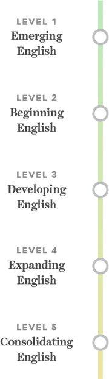

01.
Vivian
I took 4 levels of ESL classes, starting in Level 2 and finishing Level 5 before I could move on to English 10. It took me over a year.
I wonder if my friends worry about their English the way I do.
I hoped to make lots of friends in ESL classes but it was harder because I'm shy. A lot of them were here for a longer time and also spoke better English than me, which made me feel bad. I ate by myself at lunch for the first few months, but I have some friends now. We talk about anime and cosplay, which I love.
Even though I didn't have a lot of friends in my ESL classes, I wish I could have stayed there. I dread my regular classes so much. I am silent during class because I think my accent is ugly and embarrassing.
My worst fear is people asking "Huh?" and "What did you say?" over and over again.
During English class we had a spoken word presentation. When my classmates stood at the podium and talked, they had stage presence. Their English was so clean and their expressions were confident. The audience was engaged, laughing and smiling. When I spoke, everyone looked confused and awkward. The mood was completely different. I was so embarrassed.
A lot of the time I get confused on what homework we need to do or what the teacher just said, but I'm scared to ask my classmates because I don't want them to think I'm annoying if I can't understand them.

I feel like I'm annoying my classmates when I keep asking for help.
Once, the teacher made us raise our hands and answer questions for a participation mark. I needed any marks because I was close to failing, and I finally found the courage to raise my hand even though I'm terrified of speaking out loud. She kept choosing Canadian students to answer, and ignored the international students. Why did the teacher make international students participate if she was only going to ask for Canadian students' answers?
When I don't contribute, it's not because I don't want to. It's because I don't know how to say my ideas.
I understand why my groupmates don't give me a lot to do during projects. It's difficult to learn new concepts taught in class and English at the same time. I have to translate every few words from the textbook into Chinese to help me understand, which takes hours. I'm sorry if I'm useless, but I promise I'm trying not to be.
Vivian's Experience
- I am so embarrassed about my accent and I always fear saying the wrong thing.
- Canadian students don't trust me with group work because I seem stupid. It's very difficult trying to learn new concepts taught in class and English at the same time.
Your Perspective
- They are usually too quiet during presentations and discussions and they should speak up.
- They're annoying to work with because they never pull their weight. They contribute the minimum. I have to do most of the work.